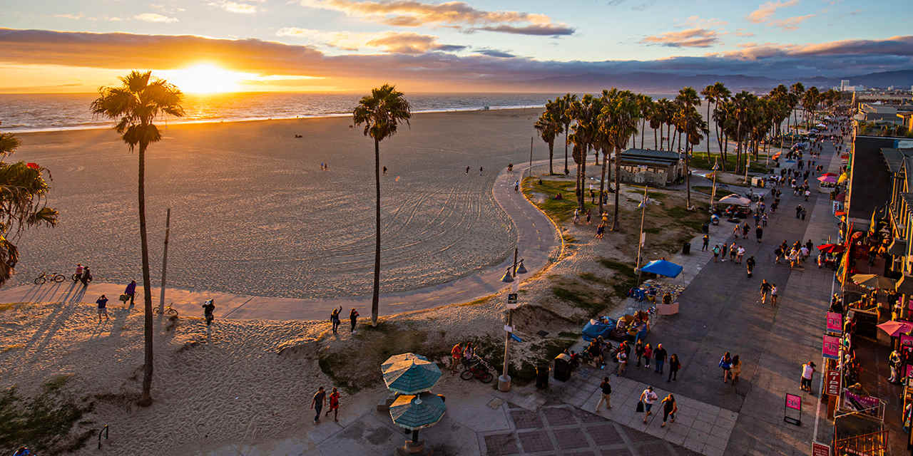
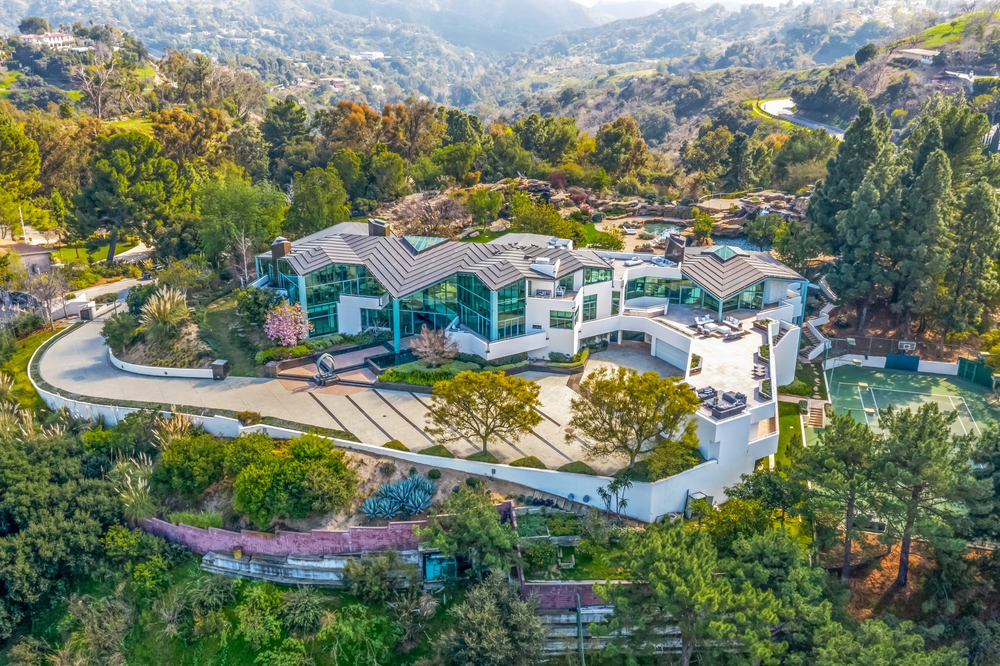
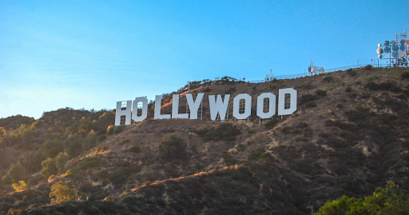
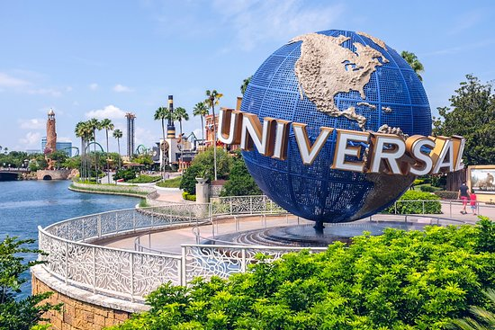

Los Angeles

Co warto zobaczyć?
Venice Beach
To powinna być pierwsza pozycja na każdej liście „zobacz koniecznie w Los Angeles”. Polecam zostawić auto w cieniu palm i wtopić się w tłum osób spacerujących po słynnym deptaku Ocean Front Walk. To miejsce naprawdę tętni życiem i dodaje energii. Muzyka wylewa się dosłownie z każdego zakątka. Po jednej stronie prawdopodobnie zobaczysz lokalnych chłopaków rapujących w niezwykle widowiskowy sposób, po drugiej jadącego na rolkach muzułmanina śpiewającego: „Born in the USA”. Istny tygiel w którym mieszają się języki, kultury, rasy i religie.
Beverly Hills
Będąc w LA nie można zapomnieć o jednej z najbogatszych dzielnic w Stanach Zjednoczonych – Beverly Hills. W tej okolicy dostatek i przepych od razu rzuca się w oczy. Równiutko przycięte trawniki, rzędy idealnych palm, ciągnących się wzdłuż czyściutkiej pokrytej lśniącym asfaltem drogi. Egzotyczna roślinność, kwiaty i luksusowe samochody przed każdym domem. High Life.
Hollywood
Ameryka to przede wszystkim kraj olbrzymich kontrastów. Po około 15 minutach jazdy od Beverly Hills, przy głównej drodze Santa Monica Blvd, prawdopodobnie zauważycie małe grupki bezdomnych. Ci z pozoru smutni ludzie pchający przed sobą na wózkach cały dorobek życia radzą sobie tutaj jednak całkiem nieźle. Nie bądź więc zdziwiony, gdy kilku z nich będzie przeglądać Internet na swoich laptopach korzystając z darmowego WiFi pobliskich kafejek. Takie obrazy towarzyszą praktycznie do samego centrum Hollywood. Tutaj jak za dotknięciem czarodziejskiej różdżki bezdomni nagle znikną, a w ich miejsce pojawiają się tłumy turystów. Tak, to Hollywood Walk of Fame! Różowo-mosiężne wypolerowane gwiazdy wtopione w hollywoodzką aleję przyciągają tutaj ludzi z całego świata. Aleja tak naprawdę ciągnie się prawie przez 2 km i znajduje się na niej ponad 2600 gwiazd.
Universal Studios
Czas na słynne Universal Studios znajdujące się na północnych przedmieściach Los Angeles. Aby nie tracić czasu w długich kolejkach, polecam pojawić się tutaj co najmniej na godzinę przed otwarciem. Universal Studios zabierze cię w najbardziej zwariowaną w życiu podróż po miejscach znanych z wielkiego ekranu. Koniecznie zabawę należy zacząć od największej atrakcji tego miejsca czyli słynnego „Harry Potter and the Forbridden Journey”, (tutaj ustawiają się zawsze najdłuższe kolejki). Pozostałe przebojowe miejsca takie jak Park Jurajski oraz Transformers 3D już nie wywołuje takiego zachwytu, choć są równie ekscytujące.